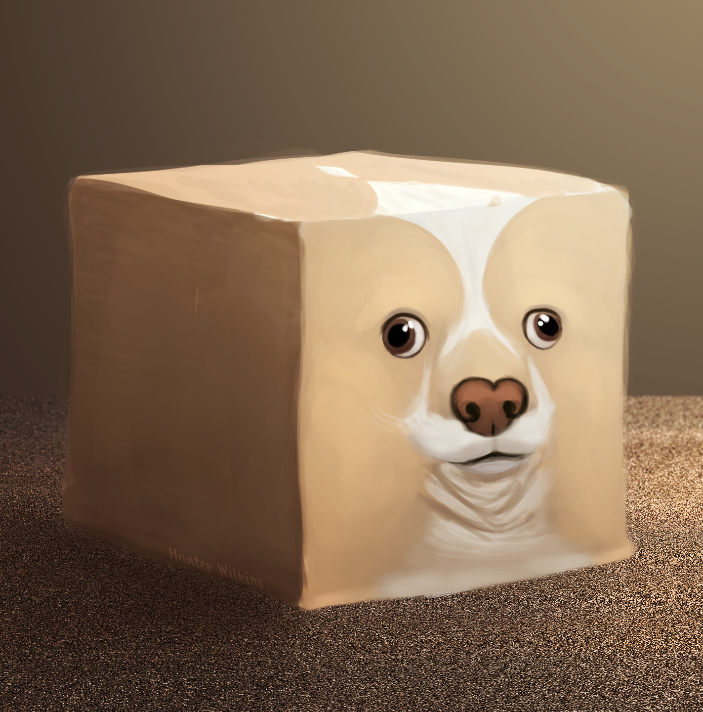

About Me

Hunter Wilkins is an artist, musician, writer, and (as of February 19th) a front-end programmer. And yet, somehow, he doesn't have a job. How's that fair? HoW'S tHaT FAiR??!? After discovering that his art education was borderline nonexistent, he found himself being his own professor. His main focus in 2019 is to develop his own video game as some sort of a one-man development studio.